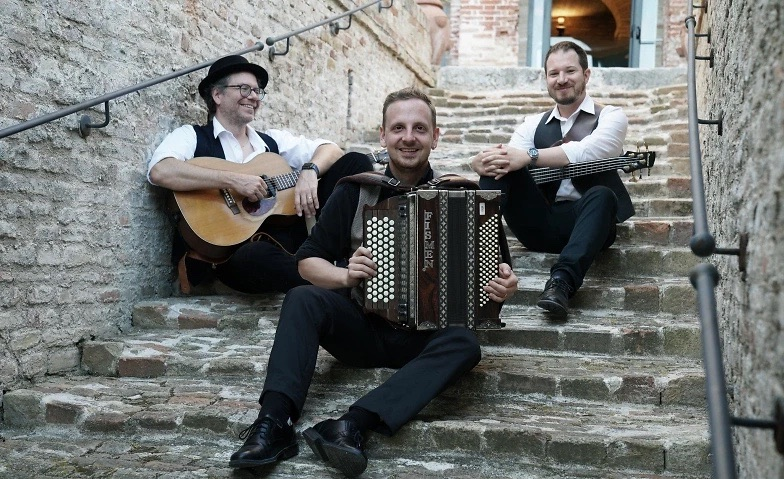

Marc Scheidegger
Gitarrist und Sänger – live mit dem Julian von Flüe Trio und Mala Oreen, als Begleitmusiker im Studio und mit eigenen Übe-Tools für alle, die ein Instrument lernen.
Live auf der Bühne

Julian von Flüe Trio
Alpine Folk mit Akkordeon, Gitarre und Bass. Aktuelles Album «Alpine Folk» (2024), Konzerte bis 2027 und Auftritte in der SRF-Sendung Potzmusig.
Mehr erfahren
Mala Oreen
Americana und Folk mit Fiddle, Mandoline und mehrstimmigem Gesang. Album «AWAKE» (2021), seit 2019 zahlreiche Konzerte.
Mehr erfahrenNächste Konzerte
-
Julian von Flüe TrioARTick – Schlössli Mattstetten · 20:00 Uhr Infos ↗
-
Julian von Flüe TrioAlpine Folk im Roten Doppelpfeil «Churchill», Zürich · 18:00 Uhr Infos ↗
-
Julian von Flüe TrioKulturverein Ermitage, Beckenried
-
Julian von Flüe TrioJazzclub Thalwil, feat. Roland von Flüe
-
Julian von Flüe TrioAnna Stüssi Haus, Dänikon
-
Mala OreenDinner-Konzert, Frohe Aussicht, Oberrieden · 20:00 Uhr Infos ↗
-
Julian von Flüe TrioTheater im Pfarrhauskeller, Waldenburg
-
Julian von Flüe TrioKleinkunstbühne Rathus-Schüür, Baar · 20:15 Uhr
-
Julian von Flüe TrioLe Singe, Biel · 21:00 Uhr
-
Julian von Flüe TrioDiogenes Theater, Altstätten · 20:00 Uhr Infos ↗
-
Julian von Flüe TrioKulturhalle Rothenburg · 20:00 Uhr
-
Julian von Flüe TrioKulturschopf Feldbach · 19:30 Uhr
-
Julian von Flüe TrioGaswerk Eventbar, Seewen · 20:15 Uhr Infos ↗
-
Julian von Flüe TrioSchloss Schauensee, Kriens · 19:30 Uhr
-
Julian von Flüe TrioKulturraum Marabu, Gelterkinden · 17:00 Uhr
Zurzeit sind keine Konzerte eingetragen.

Bühne, Studio, Festival
Vom Jazzfestival Willisau mit Kubus über Clubtouren mit Moë und die Open Mic Band im Kaufleuten Zürich bis zu Kids on Ice im Hallenstadion mit Andrew Bond: Seit über 25 Jahren spiele ich in Bands, begleite Sängerinnen und Sänger und arbeite im Studio.
Meine Übe-Tools
Kostenlose Werkzeuge im Browser – für das tägliche Üben auf Gitarre, Ukulele und Keyboard.

Würfel
Zufallsgenerator für die Übezeit: Stammton, Chromatik, Akkorde, CAGED-Formen und mehr – würfeln statt immer das Gleiche üben.
Tool öffnen
Übe-Timer
Mehrere Timer für ein ganzes Übeprogramm. Sie laufen nacheinander ab, mit Gong am Ende jeder Übung und einem Journal für Notizen.
Tool öffnen
Instrumentengrafiken
Akkorde und Formen auf Gitarre, Ukulele und Keyboard sichtbar machen – klar dargestellt, mit hervorgehobenen Grundtönen.
Tool öffnen